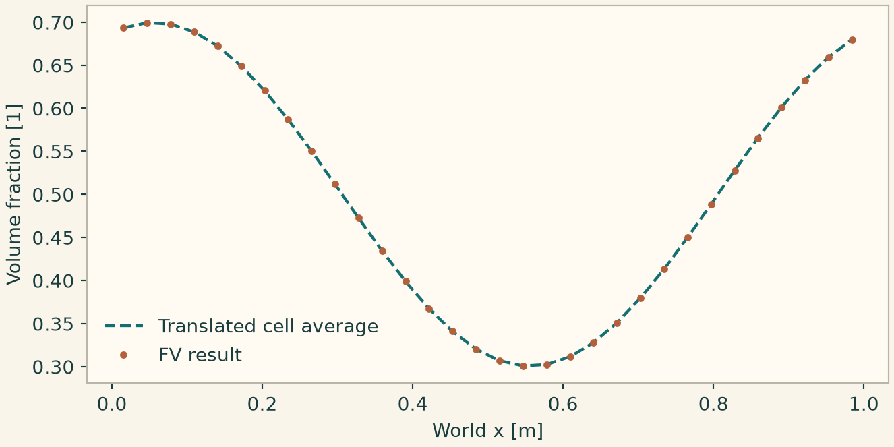

Docs › Build a first case in each physics package › Hydrodynamics
5.9 Hydrodynamics
onesim.physics.hydrodynamics
For incompressible flow, construct IncompressibleNavierStokes with density and dynamic viscosity, usually via NewtonianFluid. Select physical wall conditions such as NoSlipWall, FixedVelocity or RotatingWall. A PressureTraction imposes \(-p_{\rm ext}\mathbf n\) and a FlowTraction specifies the full outward Cauchy traction. When the conditions leave pressure determined up to a constant, apply a supported pressure reference such as MeanValue. When a physical pressure traction already fixes it, use that pressure datum. Choose a compatible mixed FEM pair or an FV pressure–velocity strategy. Compare a laminar velocity profile, divergence and net boundary flow before plotting a streamline panel. test_mixed_flow_natural_boundaries.py gives a Taylor–Hood example with a known pressure and velocity.
For compressible flow, initialize density, momentum and total energy with a consistent IdealGasEquationOfState. Choose a conservative method and an EulerInvariantDomain where supported. ShallowWater uses depth and discharge. TopographicShallowWater adds bed elevation and a wet/dry regime. Verify lake-at-rest preservation before a dam-break study with dry cells. PhaseAdvection transports a phase fraction and has a corresponding invariant-domain declaration. CahnHilliard evolves composition and chemical potential from a free-energy and mobility law. ReactiveMixtureTransport adds species and thermal sources, and OldroydBShear evolves homogeneous viscoelastic stress. For porous flow, DarcyPressureFlow uses pressure, permeability, viscosity and pressure storage. Keep its physical pressure in Pa distinct from groundwater head in metres.
5.9.1 Verify conservative transport of a phase fraction
The periodic test holds the transport speed fixed and starts with a smooth fraction in \([0,1]\). The integral is independent of advection on the closed periodic domain. Use the cell-supported fraction for the balance and plot it against the translated cell average.
# Use run_periodic_line from this chapter.
from onesim.numerics.fvm import FiniteVolume, MUSCL, Rusanov
from onesim.physics.hydrodynamics import PhaseAdvection
line = Line(start=(0, 0, 0), end=(1, 0, 0))
phase = PhaseAdvection(
domain=line.line, velocity=0.7, first_density=1000.0, second_density=1.0,
)
result = run_periodic_line(
line, phase, ((phase.volume_fraction, lambda x: 0.5 + 0.2*np.cos(2*np.pi*x)),),
Numerics(spatial=FiniteVolume(convection=Rusanov(), reconstruction=MUSCL()),
time_integrator=ClassicalRungeKutta4()),
cells=32, end=0.08, dt=0.001,
)
fraction = result.field(phase.volume_fraction)
assert abs(fraction.integrate().value - 0.5) < 2e-12
assert np.all((fraction.values >= 0) & (fraction.values <= 1))
import matplotlib.pyplot as plt
import onesimulation_plot_theme as theme
x = fraction.space.dof_coordinates[:,0]
reference = .5+.2*np.sinc(1/32)*np.cos(2*np.pi*(x-.7*.08))
theme.use_theme()
fig,ax=plt.subplots(figsize=(6.8,3.4),layout="constrained")
ax.plot(x,reference,"--",label="Translated cell average")
ax.plot(x,fraction.values,"o",markersize=3,label="FV result")
ax.set(xlabel="World x [m]",ylabel="Volume fraction [1]")
ax.legend(frameon=False)
plt.show()
